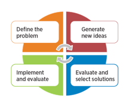
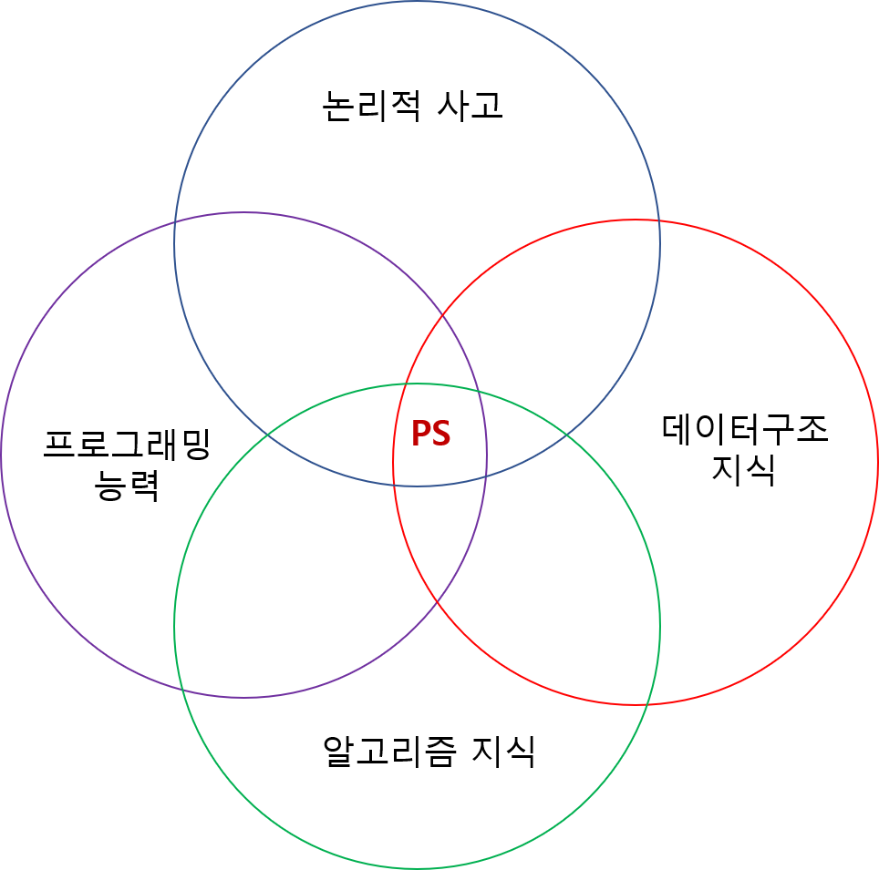

문제해결(Problem-Solving)이란?
한 마디로, 문제가 주어지고, 그 문제를 푸는 모든 행위이다.

의식적으로 보면, PS(문제해결)은 여러 과정으로 나눌 수 있다.
오른쪽 그림과 같이 크게 4가지 과정으로 이루어진다.
- 문제를 정의하는 과정
- 문제의 대한 해결법을 연상하는 과정
- 이 때 떠오른 해결책에 대해 평가하는 과정
- 그 해결책에 따라 문제를 푸는 과정
이 때, 평가과정이나 푸는 과정(3번 또는 4번 과정)에서, 풀이법의 비정확성 또는 큰 비효율성이 발견되면
다시 연상과정(2번의 과정)으로 돌아간다.
전체적으로, 컴퓨터과학에서의 PS도 위 과정과 큰 차이가 없다.
다만, 우리는 이 모든 단계를 컴퓨터를 이용해 푼다는 전제가 있기 때문에
- 연산장치 (e.g CPU, GPU)
- 메모리 (e.g RAM)
- 프로그래밍 언어 (e.g C, C++, JAVA, Python)
위와 같은 컴퓨터적인 요소를 항상 고려 해야한다는 것이 핵심이다.
이 글 밑에서부터 PS의 용어는 컴퓨터과학에서의 PS를 말하는 것이다.
PS는 우리에게 왜 필요할까?
사실, 실제 현장에서는, 높은 PS 능력을 요구하는 일은 자주 없다.
특히, 어느 정도 고난이도의 PS능력을 요구하는, 예를 들면 ICPC 수준의 문제는
머리를 쥐어짜면서 풀다보면 ‘내가 이걸 진짜 현장에서 쓸까?’ 라는 의문이 절로 나오게 된다.

이런 의문에도 불구하고, PS 능력을 계속 길러야 하는 이유는 무엇일까?
조금은 뜬금없지만, 난 스포츠 분야의 생리에서 이유를 찾을 수 있다고 생각한다.
스포츠 분야에선, 어떤 종목 (예를 들면: 축구, 농구, 야구)이든 공통적으로 하는 훈련이 있다.
바로 러닝(달리기) 훈련이다.
이 훈련을 하는 이유는 심폐지구력,주력 등 모든 종목에 필수적인 역량을 기르기 위함이다.
휼륭한 스포츠 선수들은 이 훈련을 절대 게을리 하지 않는다
한 선수가 아무리 스킬적인 부분이 좋더라도 필수역량들이 부족하면
그 선수는 스킬로만 커버할 수 있는 선을 넘은 이후에는 성장의 한계를 맞게 된다
나는 PS를 모든 소프트웨어 분야를 관통하는 컴퓨터과학의 러닝훈련 이라고 생각한다.
이 PS를 통해 개발할 수 있는 능력은 대부분 소프트웨어분야(앱개발, 웹 개발, 머신러닝 등)에
필수적인 기본 역량들이고, 이를 잘하는 건 장기적으로 퍼포먼스의 향상과 연결이 된다.
만약 소프트웨어분야 직업종사자로서 살아간다면, 평생 훈련해야할 영역이 아닐까?
PS에선, 어떤 능력을 얻을 수 있을까?

- 논리적 사고력
- 알고리즘 지식 및 적용
- 데이터구조 지식 및 적용
- 프로그래밍 능력(구현력)
- 논리적 사고력:
한 마디로, 이건 수학문제 풀 때 능력과 굉장히 유사하다.
이건 PS에 있어 가장 중요한 능력이며, 짧은 시간 안에 키우기 힘든 능력이기도 하다.
흔히, 수학을 잘하는 사람이 PS 실력이 빨리 느는 이유도 이 때문이다.
좀 더 파고들어가면, 이 능력은 여러 부분을 내포하고 있다.
- 주어진 문제에서 핵심(core)를 파악하는 능력 (logic 주제 찾기)
- 문제에 적합한 풀이도구 찾는 능력 (logic 도구 찾기)
- 문제의 풀이법을 도식화 및 구상 하는 능력 (logic 만들기)
- 문제의 풀이법이 충분히 Reasonable 한지 파악하는 능력 (logic 판단)
-
알고리즘 지식 및 적용:
수학문제를 풀 때 수학 공식이 있었다면, PS는 알고리즘이 있다고 생각하면 된다.
하지만, 수학문제와는 다르게 우리는 컴퓨터를 사용해서 문제를 푼다.
이는, 컴퓨터의 연산장치와 메모리도 사용할 수 있다라는 점을 이용할 수 있고
이를 활용해, 우리는 이전의 손으로는 풀지 못했던 문제를 풀 수 있게 되었다.
알고리즘은 컴퓨터를 연산장치와 메모리를 활용할 수 있게 만든 수학공식라고 볼 수 있다.
알고리즘을 제대로 알고, 적절한 알고리즘을 적용, 조합 시키는 능력은
PS를 통해 얻는 핵심적인 능력이고, 컴퓨팅적 사고력을 키울 수 있다.
- 더 자세한 건, 알고리즘을 참조 -
데이터 구조 지식 및 적용:
종이에 적으면서 푸는 수학문제와 다르게, PS는 컴퓨터 위에 적는다.
따라서 우리는 컴퓨터의 연산장치와 메모리를 활용할 수 있다라는 점을 이용할 수 있고
이를 활용하여, 시간-효율성을 증진시키고, 문제를 단순화 시키기 위해 고안된 방법이다.
어떤 데이터 구조도 사용하지 않고, 알고리즘으로만 풀 수 있는 문제도 있지만
데이터 구조를 제대로 알고, 적절한 데이터 구조를 적용하는 능력은
인풋(Input) 양과 값이 커지고, 문제가 복잡해질 수록 빛을 내는 능력이다.
- 더 자세한 건, 데이터 구조를 참조 -
프로그래밍 능력(코드 구현력):
계속 언급하지만, 우리는 컴퓨터를 활용해 PS를 한다.
따라서, 컴퓨터를 활용할 수 있는 능력 그 자체도 정말 중요하다.
아래에 나와 있는 능력은 몇 가지만 이야기를 한 것이다.
더 나가면, 리펙토링 포함한 readible한 코드 작성과
하드웨어 이해를 고려한 구현까지 포함한다.- 자신이 생각한 풀이법을 그대로 코드로 구현하는 능력
- 구현에 사용하는 프로그래밍 언어에 대한 이해력
- 나를 포함한 다른 사람도 쉽게 이해할 수 있는 코드를 적는 능력
- 자신이 생각한 풀이법을 그대로 코드로 구현하는 능력
어떻게 PS를 학습해야 할까?
학습법은 기본적으로는 나의 학습철학를 바탕에 두고 이루어진다.